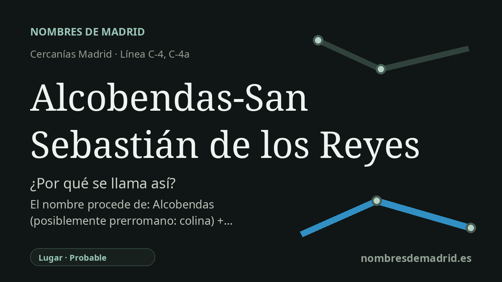

Publicado el · Investigación de Nombres de Madrid · Cómo verificamos cada origen · 9 fuentes consultadas
Respuesta rápida
La estación toma su nombre de los dos municipios a los que sirve, Alcobendas y San Sebastián de los Reyes, cuyos cascos urbanos se encuentran en la avenida de España. San Sebastián de los Reyes tiene un origen religioso y real bien documentado, mientras que el nombre antiguo Alcobendas sigue siendo etimológicamente incierto.
La historia del nombre
El nombre de la estación es directo y funcional: Alcobendas-San Sebastián de los Reyes nombra los dos municipios a los que da servicio la parada de Cercanías. La propia información de Renfe la sitúa en la avenida de España y describe ambas localidades como un continuo urbano, históricamente separado por la avenida de España y la avenida de Madrid. Esa geografía explica que la parada ferroviaria lleve los dos nombres y no solo uno.
La mitad más antigua y más difícil del nombre es Alcobendas. Toponomasticon Hispaniae documenta la forma medieval Alcovendas en 1208 y subraya que el topónimo presenta dificultades extraordinarias: es casi único, cuenta con pocas variantes antiguas útiles y no ofrece una explicación segura en latín, romance, árabe o germánico. Ramón Menéndez Pidal propuso una vía céltica con elementos interpretados como corzo o blanco, y otra posibilidad relacionada lo vincula con un celta benda, “colina”, con un valor tentativo como “colina del ciervo”. Lo importante para una lectura pública es que se trata de hipótesis, no de una traducción asentada.
El segundo municipio tiene una historia fundacional más clara. San Sebastián de los Reyes se formó junto a una ermita dedicada a san Sebastián, en terrenos vinculados a la Villa de Madrid y no al señorío de Alcobendas. Fuentes regionales y municipales sitúan su identidad jurídica definitiva en 1492, cuando los Reyes Católicos ampararon o reconocieron el nuevo asentamiento. Su nombre combina así el santo de la ermita con “de los Reyes”, referencia a Isabel y Fernando, los Reyes Católicos.
La unión de ambos nombres refleja también una historia compartida. Toponomasticon Hispaniae señala que la doble carga tributaria y las tensiones jurisdiccionales sufridas por los vecinos de Alcobendas contribuyeron a la fundación de San Sebastián de los Reyes en 1492. Siglos después, los dos núcleos separados acabaron formando una conurbación, y el ramal de Cercanías abrió al público en febrero de 2001 con una estación que servía a ambos. El nombre ferroviario moderno no es, por tanto, una fórmula antigua, sino una etiqueta contemporánea para un espacio urbano y de movilidad compartido.
La confianza es alta para el origen inmediato del nombre de la estación: está nombrada por los dos municipios. También es alta para el origen de San Sebastián de los Reyes como nombre formado por el santo y los Reyes Católicos. Es menor para el significado de Alcobendas; la mejor evidencia permite documentar la forma medieval y las principales hipótesis académicas, pero no sostener de forma definitiva que signifique “colina”, “colina blanca” o “colina del ciervo”.